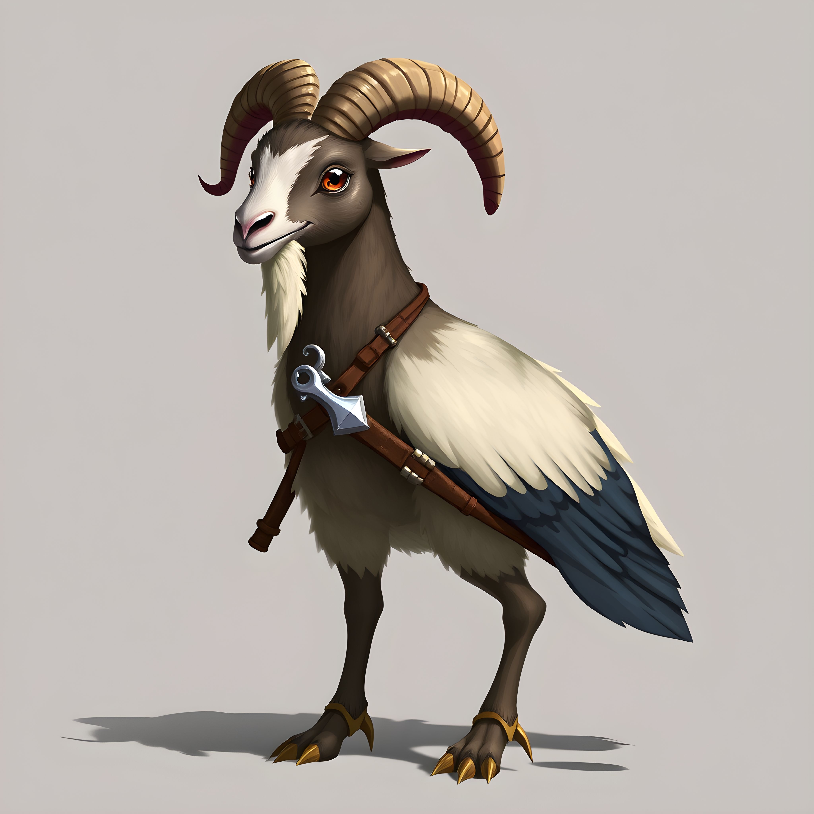

2004. december 20-án 26,5 millió fontot loptak el az észak - írországi belfasti Northern Bankból . Miután két banktisztviselő családtagjait túszul ejtették, egy fegyveres banda arra kényszerítette a munkásokat, hogy segítsenek nekik bankjegyeket lopni. Ez volt az egyik legnagyobb bankrablás az Egyesült Királyságban . A rendőrség, valamint a brit és ír kormány azt állította, hogy az Ideiglenes Ír Köztársasági Hadsereg a felelős, amit tagadtak. A rendőrség nyomozást indított és letartóztatták Észak-Írországban és az Ír Köztársaságban. Ted Cunningham pénzügyi tanácsadótól 2,3 millió fontot foglaltak le Cork megyében ; 2009-ben elítélték. Chris Wardot, a bank egyik tisztviselőjét 2005 novemberében letartóztatták, és rablással vádolják . Az ügyészség nem kínált bizonyítékot a tárgyaláson, ezért szabadlábra helyezték. A Northern Bank lecserélte saját bankjegyeit. A rablás hátrányosan érintette az északír békefolyamatot , és megkeményítette a Taoiseach és a Sinn Féin közötti kapcsolatot . Soha egyetlen egyént vagy csoportot sem tettek közvetlenül felelőssé a rablásért. ( A teljes cikk... )
hogy Johnny Gaudreau (képünkön) annak ellenére, hogy a Nemzeti Jégkorong Liga egyik legkisebb játékosa , hétszeres All-Star volt ? ... hogy Paul Steele-t a 2022-es Comhairle nan Eilean Siar-választást követően egy pakli kártyacsomagban választották meg a tanács vezetőjévé ? ... hogy a Pacific Palisadesben található Santa Ynez víztározó , amelyet azért építettek, hogy vizet biztosítson a tűzoltáshoz, üres volt, amikor a 2025-ös Palisades-i tűz kitört? ... hogy a Wielka, większa i największa 1960-as lengyel sci-fi nagy hatással volt a lengyel fiatal-felnőtt irodalomra? ... hogy a Seek eucharisztikus liturgiáit , a több ezer résztvevőt vonzó katolikus fiatalok-felnőtt konferenciát több mint másfél évre tervezik? ... hogy az 1170-es évek elején a toroni Humphrey III lehetett Transzjordánia ura, de az is lehet, hogy meghalt? ... hogy Jane Removert egy hóviharban átutazó „halálközeli élmény” után ihlette meg a Census Designated létrehozását ? ... hogy Maria Einsmann a saját férjének, Josefnek vallotta magát, amikor 1921-ben és 1930-ban anyakönyvezte társa, Helene Müller két gyermeke születését? ... hogy a halál angyalai boldogok?
